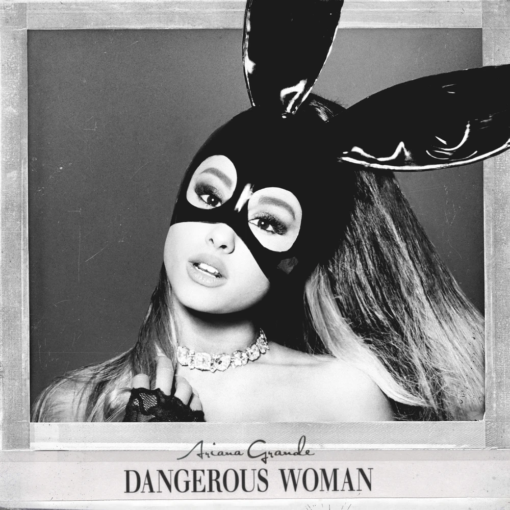
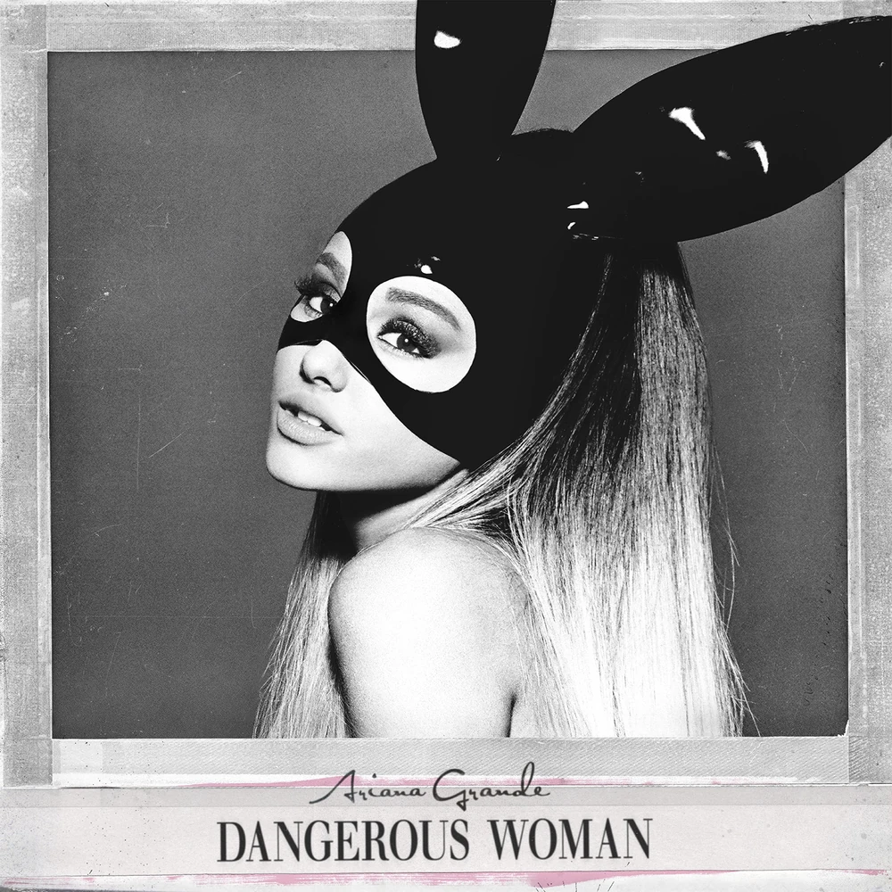
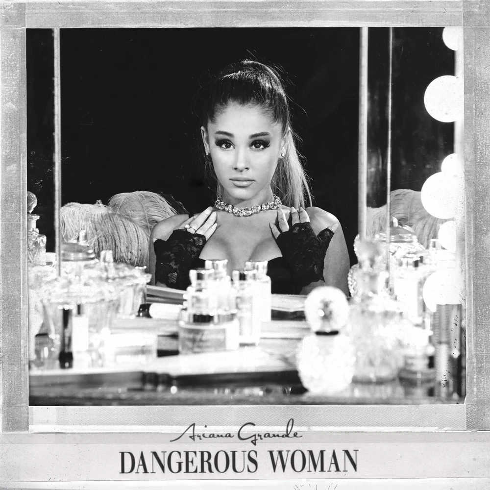
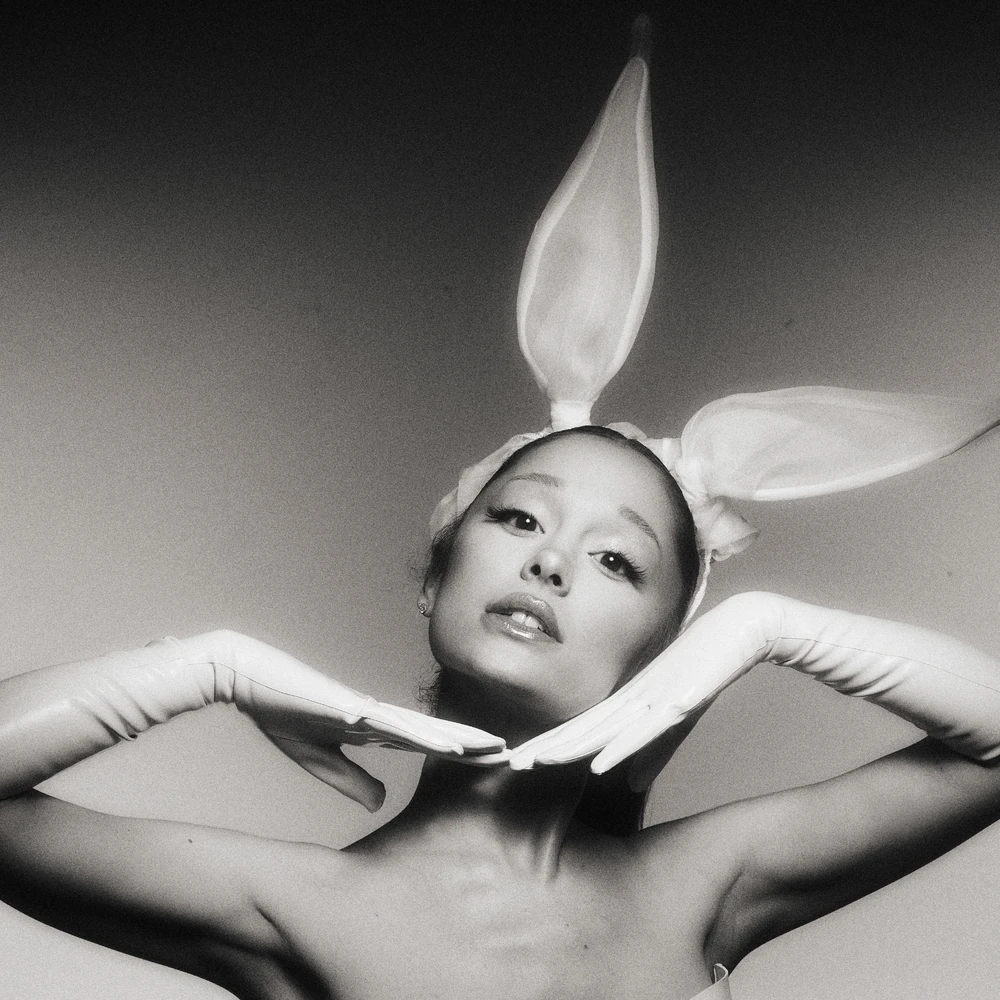
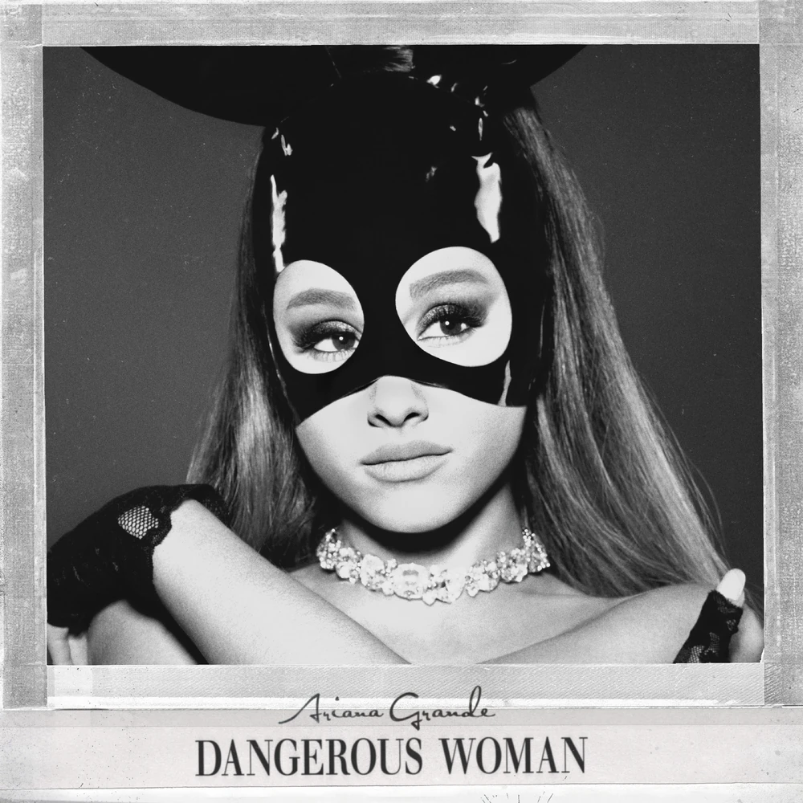
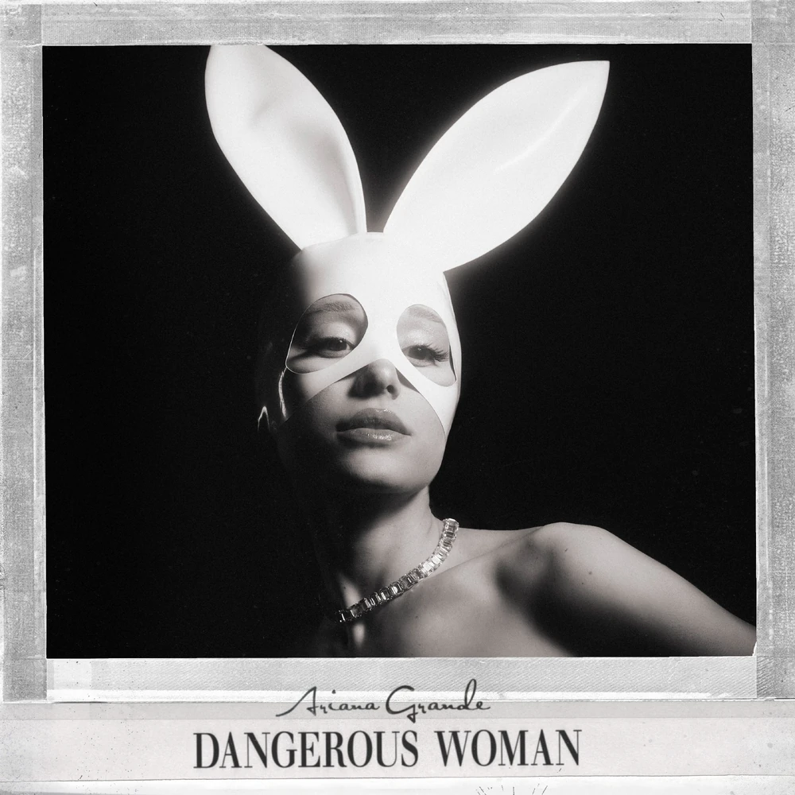
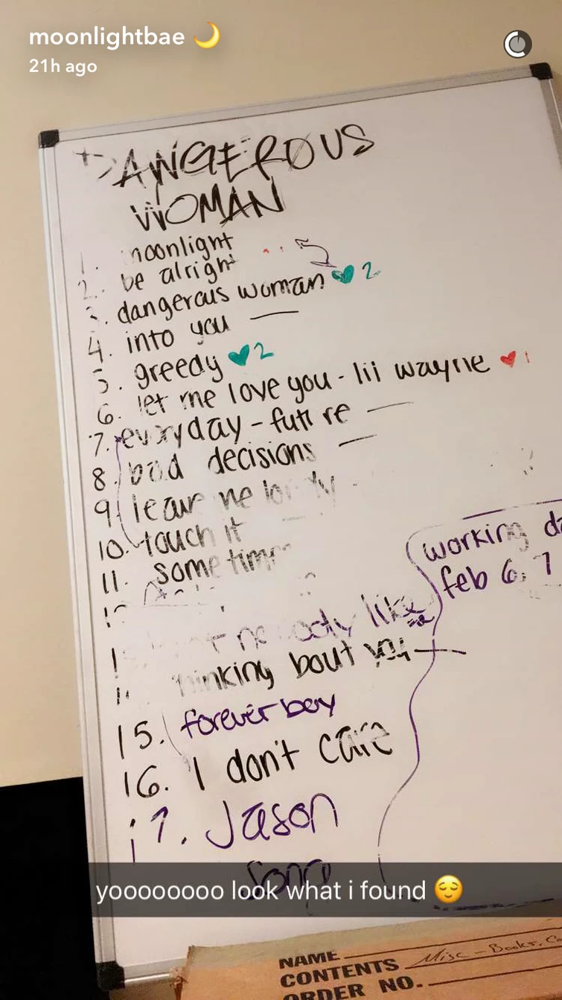
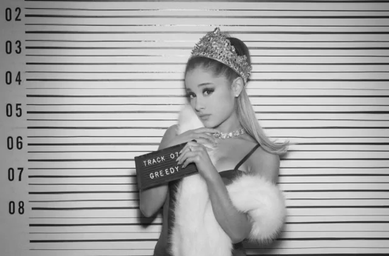
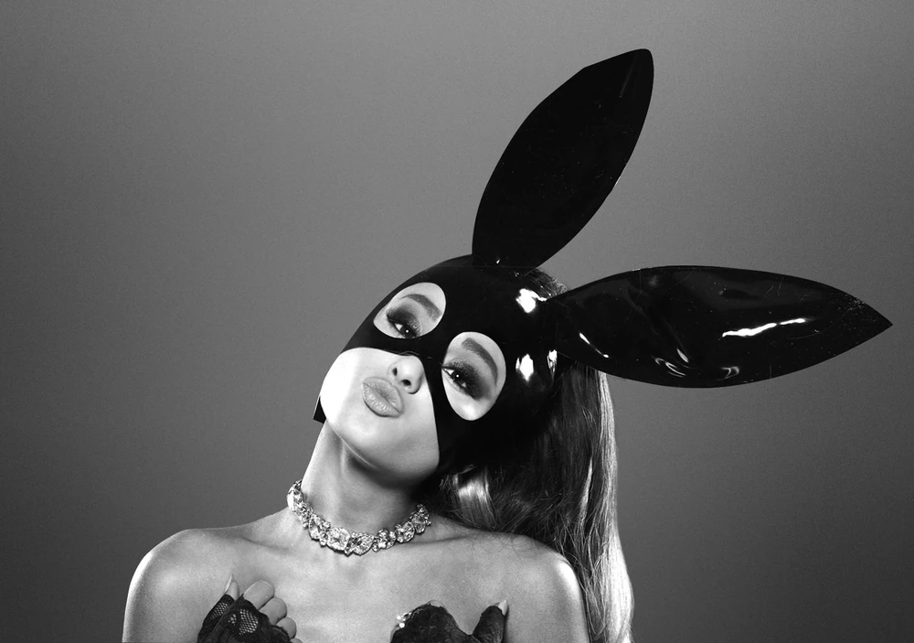
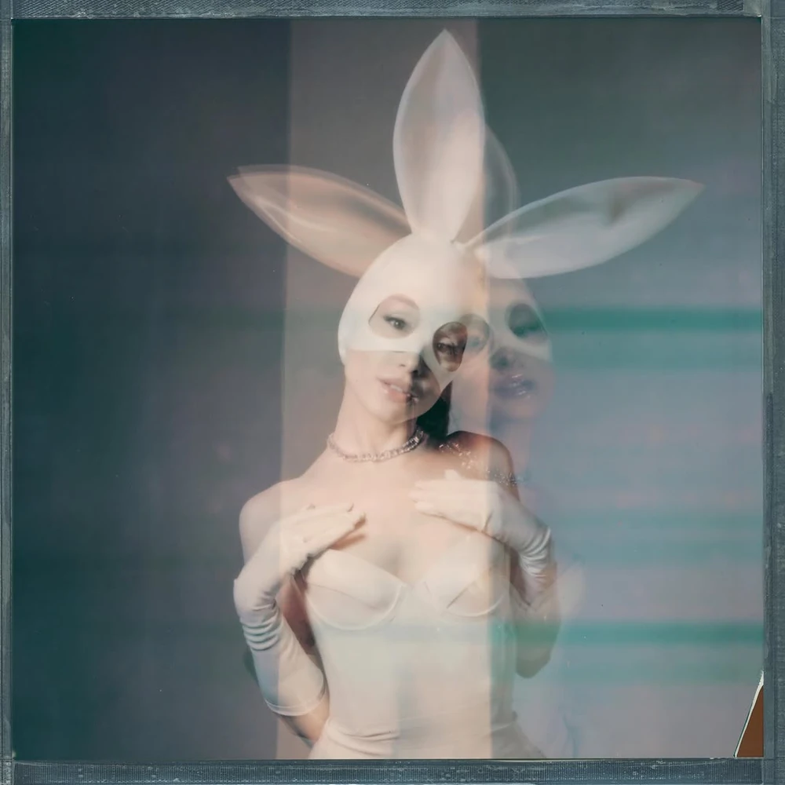

About & Background ⋆ . ˚






Dangerous Woman (commonly abbreviated as DW) is the third studio album by American singer Ariana Grande, released on May 20, 2016, by Republic Records. On May 20, 2026, the Tenth Anniversary Edition was released.
Lyrically, Dangerous Woman takes on a more mature theme in contrast to Grande's previous efforts, revolving around love, sex, rebelliousness, destructive relationships, and self-pleasure. An eclectic record, the album incorporates, EDM, disco, house, trap, hip-hop, reggae-pop, electropop, and new jack swing. The album was received positively by critics, many of whom praised Grande's powerful vocals, matured lyrical content, and ability to adapt to many different musical styles. Others felt the album was consistent, but not cohesive.

On August 25, 2014, Grande released her positively received second studio album, My Everything. Just months after its release, in October 2014, Grande confirmed that work on a third album had already begun, and even teased a potential title for the upcoming album: Moonlight. She later went on to state that she was aiming for a late-summer/early-fall 2015 release. Grande continued to record for the album all the way into the beginning of 2015.
On February 25, 2015, Grande departed on her second concert tour, the Honeymoon Tour. She would find time between shows to record for her upcoming third album. Around late-April, 2015, following the conclusion of the first leg of the tour, Grande dove head-first into new material for the album, working with longtime friends and collaborators Tommy Brown and Victoria Monét. On May 8, 2015, Grande confirmed that she had completed a new song with the two, and described it as "very lovely and special." Brown later took to Instagram to talk about the song, expressing wishes to reveal the name of the song to fans. Hints about this new song's title began circulating online, with Grande's increased crescent moon imagery. Later that month, on May 29, 2015, Grande confirmed the title of this new song as "Moonlight", and stated that her upcoming third album would also share that name. "Moonlight" was later confirmed to be about "this boy" (Ricky Alvarez) that Grande was dating at the time. She went on to reveal that the song was "about this very cute night [they] had together". Grande continued: "It's the most personal music I've ever written."

Grande spoke about the album in June 2015, stating that she already had 12 songs for the album finished, and was planning on writing more as soon as the tour commences. On October 25, 2015, Grande posted a snippet of the song "Got Her Own" to her Snapchat. Though the song was instantly a fan-favorite, its release never materialized. It wouldnt be until November 1, 2019, that the song would finally see an official release, just four years after being initally teased. It was released within the Charlie's Angels Soundtrack and features Grande's longtime friend and collaborator, American R&B and pop singer-songwriter, Victoria Monét.
Grande officially announced Moonlight's lead single on September 15, 2015, the funk-pop inspired "Focus", set for release on October 30, 2015. Grande stated that the song was something of an "outlier" on the album. She continued: "...I put "Focus" first because it's the only one [on the album] that sort of sounds like that." She later went on to call the song a "bridge between the My Everything and Moonlight eras." Critically, the song received mixed-to-negative reviews upon release. While Grande's vocals were univerally praised, most critics found the song to be too similar to "Problem", and found the appearance of Jamie Foxx in the chorus to be "grating" and "annoying". The song debuted at number seven on the US Billboard Hot 100, becoming Grande's sixth top-ten single on the chart.

Following the underperformance of "Focus", Grande quickly returned to the studio to record new material. On January 6, 2016, Grande posted a picture of her recording studio to Snapchat. A poster board could be seen in the corner of the image, subsequently revealing the names of three songs considered for the album: "Be Alright", "Moonlight", and "Let Me Love You". On January 11, 2016, Grande removed "moonlight" from her now-defunct Twitter bio. This change made fans suspicious, to which she later responded by saying "you'll see". She later went on to reveal that she was debating on whether or not to rename the album. A few days later, on January 14, 2016, Grande appeared on Jimmy Kimmel Live! and confirmed the possible title change. On January 21, 2016, Grande confirmed on Snapchat that she was finished with the album, though it has been confirmed that work continued after this. That same day, she posted a picture on Instagram with the caption "dw", which fans suspected was a hint towards the album's new title. Later that month, Grande once again teased the album's new title by posting a picture of her in a white crewneck with writing on it, though she covered up the words, stating: "I can't tell you what this shirt says yet." On February 3, 2016, Grande performed at the iHeartRadio Summit. The event was closed to the public and only a few images of the performance were released. Grande was seen playing the guitar and using a vocodor, both of which were new for her. The shirt she was wearing in the performances was the same one she teased on Instagram just days prior. Though the images were somewhat low-quality, fans concluded that it said "dangerous woman", which sparked rumors on the album's new title.
On February 22, 2016, Grande confirmed the new name of the album to be Dangerous Woman on Snapchat. Days later, on February 24, 2016, Grande launched a new website (dangerouswoman.com) to dedicate to album updates. She would post snippets and share exclusive information about the album on the site. On February 29, 2016, Grande hosted a live stream in which she confirmed that there would be fifteen tracks on the US standard edition of the album. Additionally, she revealed that there would be three features on the album (an additional feature (Macy Gray) was later added to the album). On March 1, 2016, "Dangerous Woman" was confirmed to be the new lead single for the album, slated for a March 11 release. A pre-order for the album was made available alongside the release of the single, and "Be Alright" was released as a gratuity track for anyone who pre-ordered the album. The next day, on March 12, 2016, Grande hosted Saturday Night Live. She also performed "Dangerous Woman" and "Be Alright" on the show.
Release and Critical Reception ⋆ . ˚
Dangerous Woman received mostly positive reviews from critics, many praising her powerful vocals and more matured image. Stephen Thomas Erlewine wrote for AllMusic that "while some of these cuts work better than others, the range is impressive" In his review for Entertainment Weekly, Nolan Feeney commented that while Grande's previous album, My Everything, "suffered for trying to be everything", on Dangerous Woman, "with a streamlined team of hitmakers such as Max Martin, she pulls off pop, R&B, reggae, and house—all without overextending herself or pandering to trends". The A.V. Club's Annie Zaleski agreed, stating that the album "possesses more personality than My Everything," and writes in conclusion that "Dangerous Woman is an effortless leap forward on which Grande comes into her own as a vocalist and performer."

In a more mixed review, The Plain Dealer's Troy L. Smith wrote that the album "plays it safe and smart", claiming it "functions as My Everything 2.0 - a collection of pitch-perfect hooks and slick production. Sal Cinquemani of Slant Magazine wrote that Grande "too often tries to look and sound more mature than she is". Christopher R. Weingarten of Rolling Stone opined that "as an album artist, she's prone to a [disjointed] sound and unfortunate sequencing."
In the United States, Dangerous Woman officially debuted at number two on the Billboard 200 making it her only album that failed to reach the top spot. It earned 175,000 units, with 129,000 coming from pure album sales. The album was blocked from the top spot by Drake's Views. On April 12, 2021, Dangerous Woman was certified double platinum by the RIAA for combined album sales, on-demand audio, video streams and track-sale equivalent of two million units. At the end of the year, Dangerous Woman was placed as the twenty-eighth best selling album of 2016. The album was placed on many year-end best lists.
Commercially, Dangerous Woman earned 175,000 units in its first week, debuting at number two on the US Billboard 200, making it her first and only album that failed to reach the top spot. On April 12, 2021, Dangerous Woman was certified double platinum by the RIAA.
Tour ⋆ . ˚

Grande announced in May 2016, that she would be going on tour to support Dangerous Woman at the end of the year (2016) or the start of the next year (2017). On September 9, 2016, Grande announced the North American dates of the tour. The North American leg took place from February to April 2017. On October 20, 2016, Grande announced the European dates of the tour. The European leg took place in May and June 2017.
In April 2017, Grande announced tour dates in Latin America for June and July 2017; in Asia for August and September 2017, including a performance in Singapore as part of the F1 Grand Prix; and in Oceania for September 2017.
In her interview with Ryan Seacrest, Grande said that she would perform every song from Dangerous Woman. She said she would also sing some old songs as well as covers. She also expressed her desire to perform "Focus" (although she did end up doing this) and to extend "Knew Better" for the tour. She expressed wanting to use the Mi.Mu Gloves on the tour originally but eventually decided not to use them on tour.
10th Anniversary Celebration ⋆ . ˚

On May 2, 2026, the official R.E.M. Beauty Instagram account began teasing the anniversary of the album by posting a behind the scenes photo of a photoshoot, in which bunny ears are visible in the camera monitor. The anniversary collection was later released on May 11th.
On May 6, 2026, Grande shared a post on her Instagram account singing "Dangerous Woman" for the first time since the Sweetener World Tour at The Eternal Sunshine Tour rehearsals. Captioning it with "our first time running this song since swt ♡ 🐇 happy ten years of dangerous woman, happy one month til tour, happy petal preorder ꕤ｡˚ see you in a month i love you so much …" teasing a Dangerous Woman (Tenth Anniversary Edition).
On May 20, 2026, the official Tenth Anniversary Edition was released in three new physical cover artwork variants, including the previously SoundCloud-exclusive track "Knew Better Part Two".
Sources ⋆ . ˚
Navigation Bar - Black & White Flower Image - Source: https://png.pngtree.com/png-vector/20240312/ourmid/pngtree-black-and-white-cute-flower-png-image_11935120.png
About and Background - Dangerous Woman Official Album Cover Image - Source: https://arianagrande.fandom.com/wiki/Dangerous_Woman?file=Dangerous_Woman.jpg
About and Background - Dangerous Woman Official Deluxe/Target Album Cover Image - Source: https://arianagrande.fandom.com/wiki/Dangerous_Woman?file=Dangerous+Woman+%28Deluxe+Cover%29.jpg
About and Background - Dangerous Woman Official Japanese Album Cover Image - Source: https://arianagrande.fandom.com/wiki/Dangerous_Woman?file=Dangerous+Woman+Cover+Japanese.jpg
About and Background - Dangerous Woman 10th Anniversary Album Cover 1 Image - Source: https://arianagrande.fandom.com/wiki/Dangerous_Woman?file=Dangerous+Woman+10th+Anniversary.jpg
About and Background - Dangerous Woman 10th Anniversary Album Cover 2 Image - Source: https://arianagrande.fandom.com/wiki/Dangerous_Woman?file=Dangerous+woman+10th+anniversary+2016+exclusive+cover.JPG
About and Background - Dangerous Woman 10th Anniversary Album Cover 3 Image - Source: https://arianagrande.fandom.com/wiki/Dangerous_Woman?file=Dangerous+woman+10th+anniversary+2026+exclusive+cover.JPG
About and Background - Dangerous Woman Early Tracklist Image - Source: https://arianagrande.fandom.com/wiki/Dangerous_Woman?file=Early_DW_Tracklist.webp
About and Background - Ariana in Dangerous Woman Photoshoot holding "Greedy" Image - Source: https://arianagrande.fandom.com/wiki/Dangerous_Woman?file=Ariana_Grande_Tracklist_photoshoot_%288%29.jpg
About and Background - Ariana in Dangerous Woman Bunny Outfit Image - Source: https://arianagrande.fandom.com/wiki/Dangerous_Woman?file=Ariana_Grande_Dangerous_Woman_bunny_Photoshoot_%284%29.jpg
Release and Critical Reception - Ariana in the music video for "Into You" Image - Source: https://thehypefactor.com/wp-content/uploads/2016/06/ariana-grande-into-you-video.png
Tour - Ariana in the Dangerous Woman Tour Image - Source: https://celebmafia.com/wp-content/uploads/2017/02/ariana-grande-performs-at-dangerous-woman-tour-in-phoenix-2-3-2017-30.jpg
10th Anniversary Celebration - Ariana in the 10th Anniversary Dangerous Woman Photoshoot Image - Source: https://arianagrande.fandom.com/wiki/Dangerous_Woman?file=703519877_18581679730042783_755433781130595671_n.jpeg
font "Karrilee" obtained from svg icons is licensed by CC BY 4.0
ALL OF THE WRITTEN MATERIAL ABOVE WERE COMPLETELY SOURCED AND TAKEN FROM THE OFFICIAL ARIANA GRANDE FANDOM WITH MINOR MODIFICATIONS. THE LINK TO THE WIKI IS HERE: https://arianagrande.fandom.com/wiki/Ariana_Grande